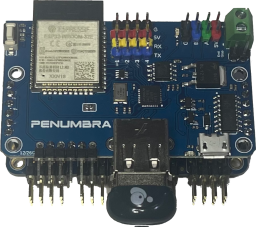
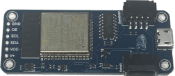
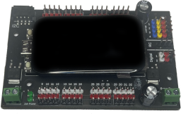
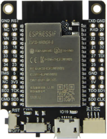
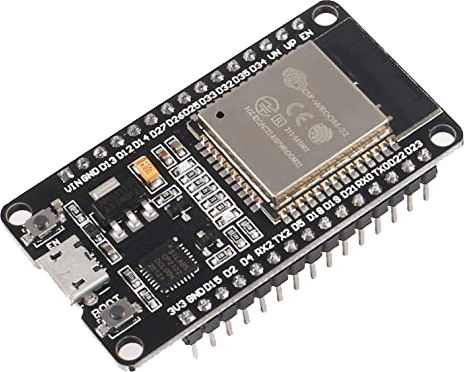

Installer for DarthServo firmware on ESP32 devices.
Plug the device to your computer using a usb cable or, as needed, a USB to serial adapter, select the hardware platform that matches your device, the version you wish to use and click on the connect button.
DarthServo firmware for the Penumbra board. The Penumbra board features USB host controller and RS485 support.
DarthServo firmware for the Yoda backpack board. The Yoda board can mount directly onto the back of the PCA9685 servo controller.
DarthServo firmware for the Amidala board. The Amidala board has two embedded PCA9685 servo controllers for a total of 32 servos. It also features a touch screen display for direct control.
DarthServo firmware for generic ESP32 with 16MB flash and one or more PCA9685 servo controllers attached via I2C.
DarthServo firmware for generic ESP32 with 4MB flash and one or more PCA9685 servo controllers attached via I2C.
